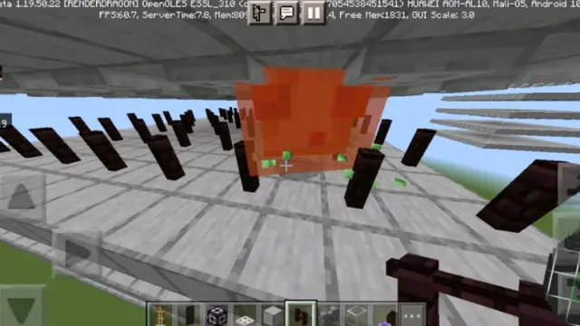
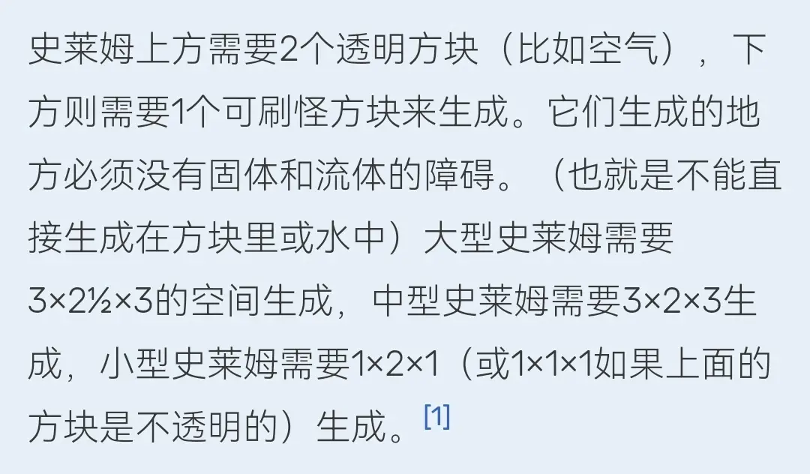
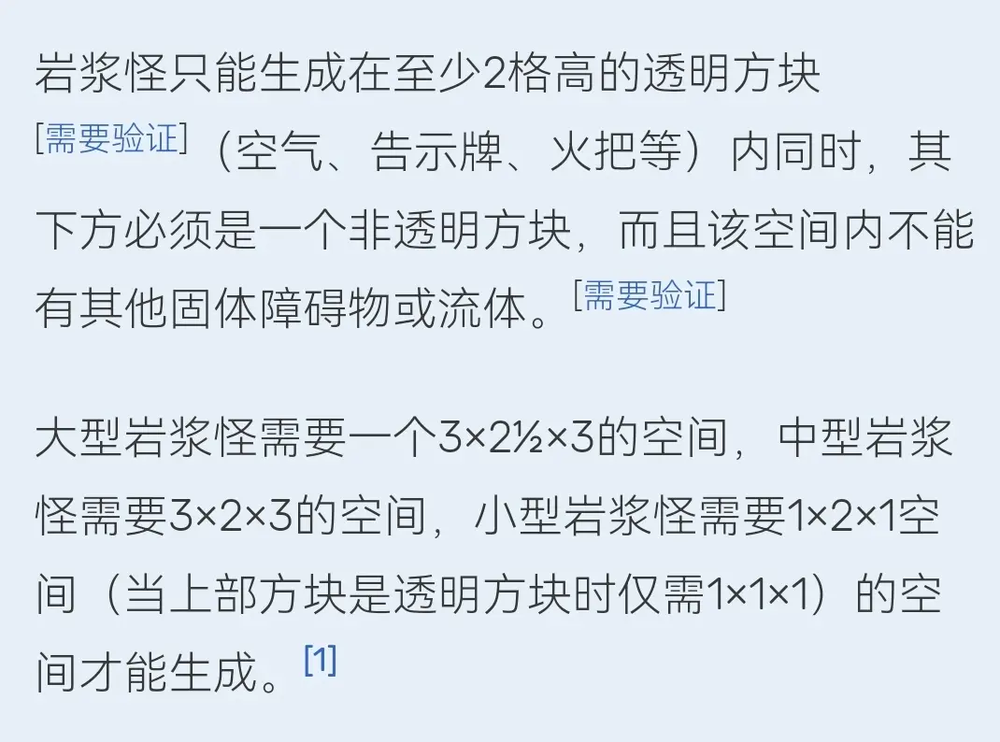
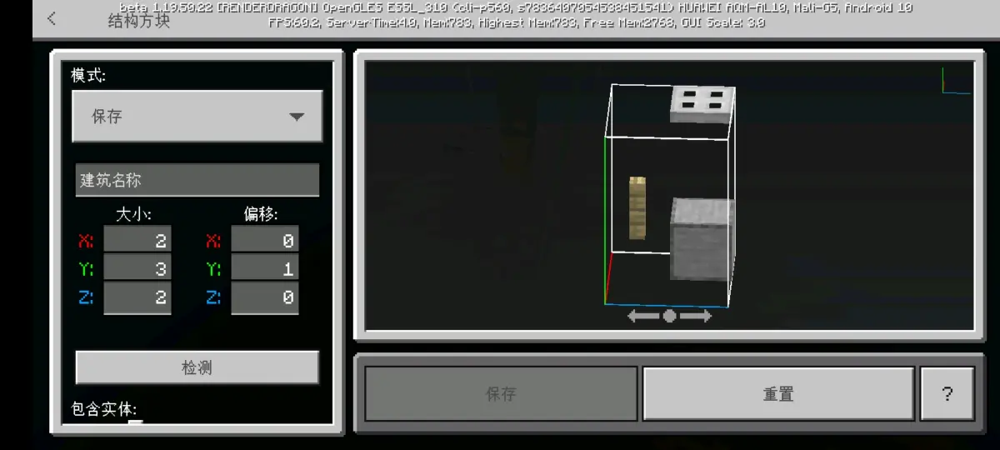
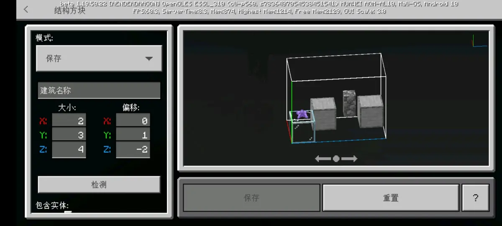
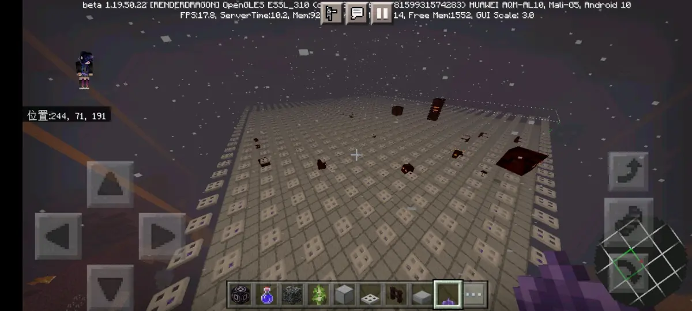
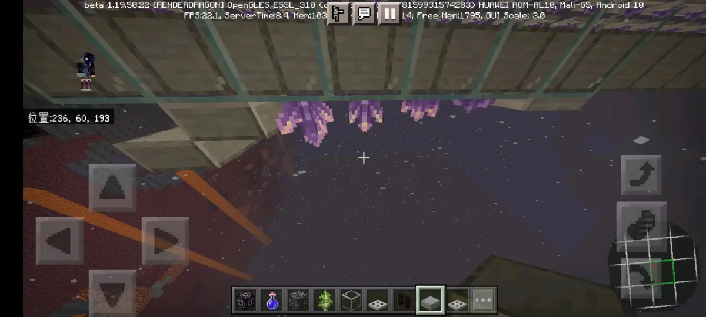
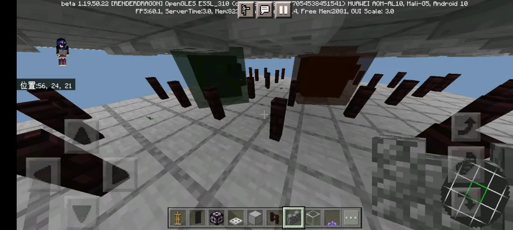
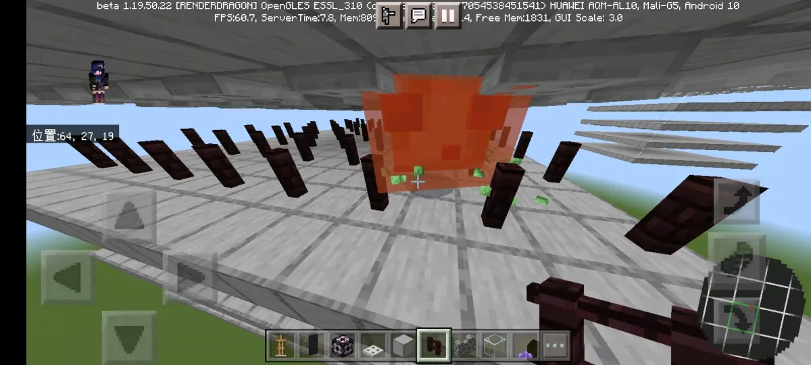
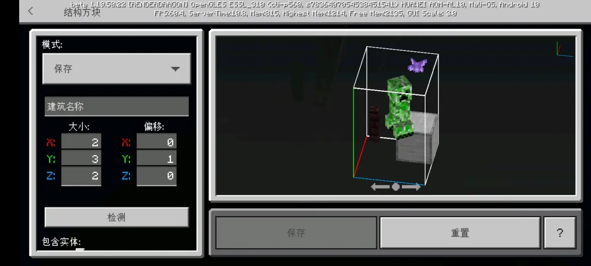

首先我们来看一下维基上关于岩浆怪和史莱姆的空间检测机制的内容
史莱姆

岩浆怪

这看起来很合理，对吧？，我们开始也是这么想的而且大部分人也都是这么想的，甚至现在，很多设计依然也是按照这个理念来的，最明显的就是用固体方块的时候，中间空三格，用半砖就只要空两格，这样中间刚好就有2.5格的空间了，这一切看起来都非常合理，之前我们也从来没有怀疑过，直到上次我们去测试烈焰人农场的时候，突然发现一个很奇怪的事情，这是我们当時的设计

这是我们理想中的烈焰人农场，活板门限高，保证只能生成烈焰人和中小型的岩浆怪，然后通过栅栏，保证只生成烈焰人和小型的岩浆怪，然后小型的岩浆怪就到主世界之后再进一步处理，但是当我们测试的時候，居然发现一个很严重的问题，为什么三种大小的岩浆怪都可以正常生成？
我们当时就感觉一脸懵逼，但是由于当時的重点并不是在做岩浆怪农场，所以我们在发现了烈焰人的宽度只有0.5格，比正常生物的0.6格要窄之后，就使用了墙壁或小型紫水晶，从而刚好可以不限制烈焰人的生成，但是我们惊讶的发现，这个時候岩浆怪居然也被限制了，然后就做出了纯烈焰人农场

然后事后我们再发完烈焰人农场的视频之后，经过仔细的思考和推理，得出了一个猜想，三种大小的岩浆怪使用的是同一套空间检测机制，而并不是像维基上所说的，分别有一套独自的空间检测机制
首先在之前做烈焰人农场的过程中，我们测试出了，岩浆怪的空间检测机制的宽度是与普通生物相同的0.6格，并且高度是已知在有活板门的情况下可以生成，也就是说，至少有苦力怕的高度
然后我们在经过了一系列的测试之后，首先确定了他在自然生成下也是同样的检测机制

然后测试了这一系列高度从高到低

最终，它可以生成的最低的高度就是小型紫水晶，而这一点和苦力怕一致，并且在可以生成的情况下，都是三种大小均可以生成
所以将它们的高度和宽度结合在一起，就可以得出来，三种岩浆怪共用一套空间检测机制，岩浆怪的空间检测范围，与苦力怕一致
这个時候我们想到了与岩浆怪几乎一模一样的史莱姆，这个大家应该更加熟悉，而且我们之前看到的众多视频当中，也都是认为史莱姆的空间检测范围与维基所说的一致，所以我们便立马去测试了史莱姆

果然，与猜想的一致，可以正常生成，并且之后又经过了一系列测试，发现确实和岩浆怪的是一致的，这个就不放出来了，但是发现一个比较有趣的东西，中间没有加栅栏的時候（准确的说应该是头顶上方的那一层），大型的跳动并不会受伤，但是加了之后，大型的跳动的時候会受到窒息伤害

所以最后就得出了一个结论，岩浆怪和史莱姆，它们的空间检测机制是一样的，并且都是三种大小共用同一套空间检测机制，并且这套空间检测机制的检测范围，基本确定与苦力怕一致

所以也就是说，之前的那些用半砖来保证两层之间间隔为2.5格的设计，实际上，除了保证生成的史莱姆和岩浆怪不会卡在生成架上之外，其实和两层之间空两格的完整方块生成架没有任何区别
不过实际上，利用这一点的话，其实你可以设计出一个看起来很奇怪的组合，那就是史莱姆苦力怕农场，两个绿油油的东西集中在一块，问题不大
总之，具体有什么用的话，就带大家去开发了，这篇专栏的意义就是让大家不要再被维基给误导了，因为上面基本上很多东西都是JE专属的特性，但是上面并不会标明出来，总之就是想让大家了解一下岩浆怪和史莱姆真正的空间检测机制，行吧，那就这样，到此结束，问题不大